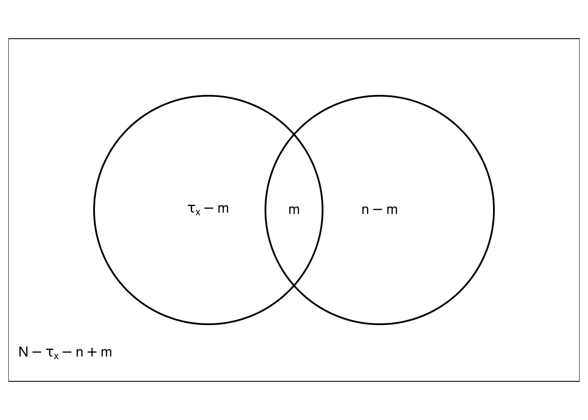
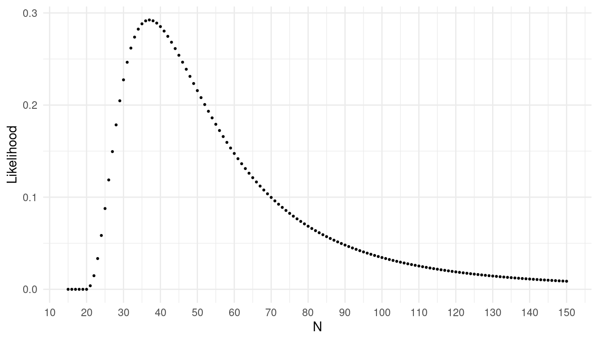
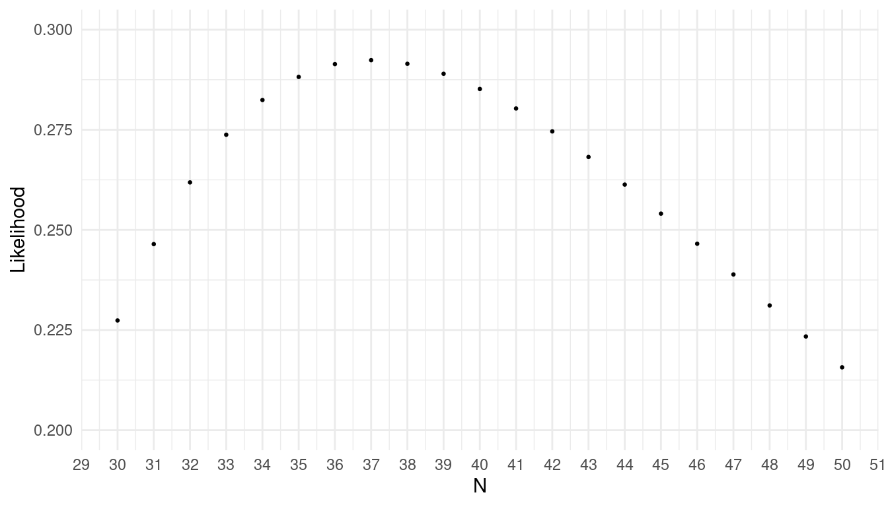
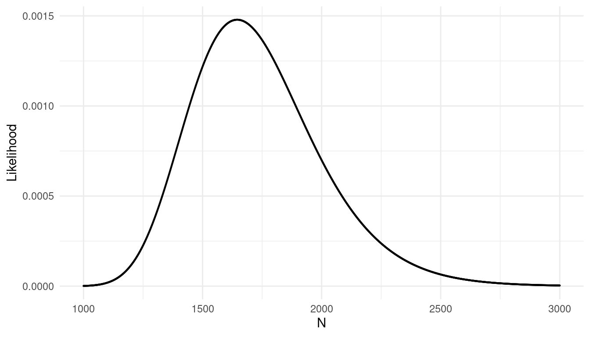
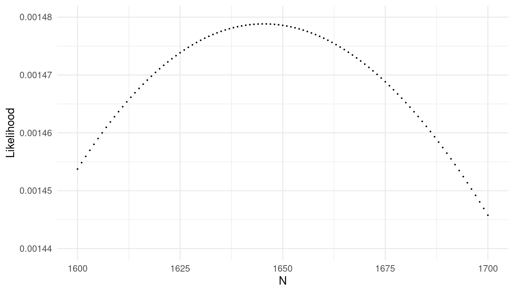
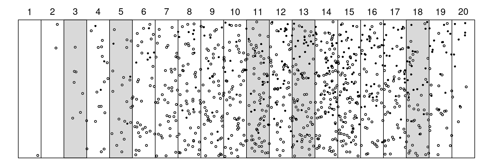

You can also download a PDF copy of this lecture.
The mark-recapture design involves two samples:

Classify every element in the population in terms of whether it was included or excluded from the two samples.| First Sample | included | excluded | Total |
|---|---|---|---|
| included | \(m\) | \(\tau_x - m\) | \(\tau_x\) |
| excluded | \(n-m\) | \(N - \tau_x - n + m\) | \(N-\tau_x\) |
| Total | \(n\) | \(N-n\) | \(N\) |
If the number of marked elements (\(\tau_x\)) and the number of sampled elements in second sample (\(n\)) are not fixed by design, the number of elements in each of the four cells has a multinomial distribution.
Example: Suppose I have a large jar of jelly beans. We remove a handful of 300 jelly beans, mark them each with a pen, and then put them back in the jar. Then we shake the jar and draw a handful of 100 jelly beans. Of these we find that 30 are marked.| First Sample | included | excluded | Total |
|---|---|---|---|
| included | 30 | 270 | 300 |
| excluded | 70 | \(N\) - 370 | \(N\) - 300 |
| Total | 100 | \(N\) - 100 | \(N\) |
Assume inclusion in the second sample is independent of inclusion in the first sample (i.e., the probability of being included in the second sample is the same whether or not an element was included in the first sample). Then the expected number of elements included in the second sample is \[ E(m) = N \times \overbrace{\underbrace{P(\text{inclusion in first sample})}_{\tau_x/N} \times \underbrace{P(\text{inclusion in second sample})}_{n/N}}^{P(\text{inclusion in both samples assuming independence})}, \] so \[ E(m) = \tau_xn/N, \] and thus \[ N = \tau_xn/E(m). \] Replacing \(E(m)\) with \(m\) since \(E(m) \approx m\) gives the Lincoln-Petersen estimator \(\hat{N} = \tau_xn/m\).
This way of viewing the mark-recapture design is useful in applications using two “lists” of elements, rather than actual marking.
Example: Merry and Pippin want to estimate the number of Hobbits that attended Bilbo’s 111-th birthday party. They each made a list of the Hobbits that they talked with at the party. There were 72 Hobbits on Merry’s list, 100 Hobbits on Pippin’s list, and 50 on both lists.| Pippin’s List | included | excluded | Total |
|---|---|---|---|
| included | 50 | 50 | 100 |
| excluded | 22 | ? | ? |
| Total | 72 | ? | \(N\) |
What is the estimate of the number of Hobbits attending the party based on the Lincoln-Petersen estimator?
The estimators assume simple random sampling, which is what implies an inclusion probability (in the second sample) of \(n/N\). There are a couple of ways this assumption is often violated in practice.
Capturing/marking an element increases or decreases the probability of recapture.
Elements vary with respect to their probability of inclusion.
Closed population.
How might these bias our estimate?
Assume \(\tau_x\) marked units in a population of \(N\) units. If a SRS of \(n\) units is obtained, and the values of \(\tau_x\) and \(n\) are fixed by design, the probability that \(m\) units in that sample will be marked is \[ P(m) = \frac{\binom{\tau_x}{m}\binom{N-\tau_x}{n-m}}{\binom{N}{n}}, \] where \[ \binom{a}{b} = \frac{a!}{b!(a-b)!}, \] and recall that \(x! = x(x-1)(x-2) \cdots 1\), and \(0!=1\). The number of marked units in the sample (\(m\)) has a hypergeometric distribution.
The likelihood function is the probability of a sample with \(m\) marked elements as a function of the unknown parameter \(N\), which can be written as \[ L(N) = \frac{\binom{\tau_x}{m}\binom{N-\tau_x}{n-m}}{\binom{N}{n}}. \] The maximum likelihood estimate of \(N\) is the value that maximizes the likelihood of the data.
Example: Consider a mark-recapture design where \(\tau_x\) = 10 elements were marked, and in a simple random sample of \(n\) = 15 elements it was found that \(m\) = 4 elements were marked. The likelihood function is then \[ L(N) = \frac{\binom{10}{4}\binom{N-10}{15-4}}{\binom{N}{15}}. \] This function can be plotted as follows.

The maximum likelihood estimator of \(N\) is the value of \(N\) that maximizes the likelihood of the data.
What is the maximum likelihood estimate of \(N\)?It can be shown that with the likelihood given above the maximum likelihood estimator is always \[ \hat{N} = \lfloor \tau_xn/m \rfloor, \] where \(\lfloor x \rfloor\) is the floor function (i.e., the nearest integer less than the argument).
Using the likelihood function is very useful in more complex designs such as one with multiple recaptures where there is no estimator that can be written in closed form. In these cases estimates must be found numerically by using some sort of algorithm to find the value of \(N\) that maximizes the likelihood (although here that could be done “by eye” by just inspecting plots of the likelihood function).
Example: Consider a design with multiple recaptures such that every time elements are captured all unmarked elements are marked and then released. Let \(\tau_{x_k}\) be the number of marked elements in the population when obtaining the \(k\)-th sample, let \(n_k\) be the size of the \(k\)-th sample, and let \(m_k\) be the number of marked elements in the \(k\)-th sample.| \(k\) | \(\tau_{x_k}\) | \(n\) | \(m\) | \(n-m\) |
|---|---|---|---|---|
| 1 | 0 | 100 | 0 | 100 |
| 2 | 100 | 100 | 5 | 95 |
| 3 | 195 | 100 | 10 | 90 |
| 4 | 285 | 100 | 20 | 80 |
For \(K\) samples the likelihood function is \[ L(N) = \prod_{j=2}^K \frac{ \binom{\tau_{x_k}}{m_k}\binom{N-\tau_{x_k}}{n_k-m_k}}{\binom{N}{n_k}}. \] Note that the first sample is not part of the likelihood since there are not yet any marked elements in the population.


Suppose that a known number of elements in a population are “marked” in some way, and we use a one-stage cluster sampling design where we observe for each cluster the number of elements in the cluster (\(y_i\)) and the number of marked units in the cluster (\(x_i\)).
Example: The figure below shows a region that has been divided into \(N\) = 20 transects, of which \(n\) = 5 have been selected using simple random sampling.

The goal is to estimate the number of elements represented by points. The marked elements are represented by solid points, while the unmarked elements are represented by open points. It is known that the number of marked points is \(\tau_x\) = 292. The data from the sample are shown below.| Transect | \(y_i\) | \(x_i\) |
|---|---|---|
| 3 | 8 | 0 |
| 5 | 23 | 3 |
| 11 | 82 | 19 |
| 13 | 82 | 26 |
| 18 | 57 | 21 |
Here \(\tau = M\). The two estimators of \(\tau\) for one-stage cluster sampling were \[ \hat\tau = \frac{N}{n}\sum_{i \in \mathcal{S}} y_i \ \ \ \text{and} \ \ \ \hat\tau = M\frac{\sum_{i \in \mathcal{S}} y_i}{\sum_{i \in \mathcal{S}} m_i}. \] Of course the ratio estimator (on the right) isn’t practical here. But we could use another ratio estimator, \[ \hat\tau = \tau_x\frac{\sum_{i \in \mathcal{S}} y_i}{\sum_{i \in \mathcal{S}} x_i}, \] by using \(x_i\) (the number of marked elements in the cluster) as the auxiliary variable instead of \(m_i\) (the number of elements in the cluster), provided that we know the total number of marked elements (\(\tau_x\)). What are the estimates of the number of elements in the region?
Example: A company wants to estimate the number of employees who have at some point been sexually harassed. The company first sets up a voluntary online survey where all 5000 employees are invited to participate the survey. Few employees take the survey, but of those that do 200 reported experiencing sexual harassment. Now the company conducts a second survey. The employees are naturally divided into 100 offices in different parts of the country. The company selects a simple random sample of 5 offices and uses an on-site survey to elicit responses from every employee at those offices. The table below shows the number of employees at each office (\(m_i\)), the number of employees that reported experiencing sexual harassment in the on-site survey (\(y_i\)), and the number of employees reporting experiencing sexual harassment in the online survey (\(x_i\)).| \(m_i\) | \(y_i\) | \(x_i\) |
|---|---|---|
| 51 | 4 | 0 |
| 51 | 43 | 5 |
| 50 | 24 | 2 |
| 49 | 17 | 1 |
| 51 | 6 | 0 |
What are our estimates of the number of employees at the company that have experienced sexual harassment?